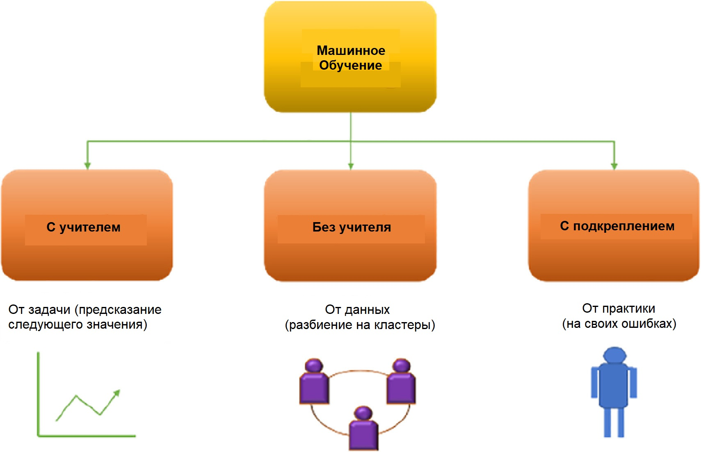

Machine Learning
Machine Learning — это способ обучать компьютеры без программирования и явных инструкций, используя только шаблоны и логические выводы. В данной ситуации машине говорят не «сделай 1+1», а показывают пример и просят сделать «похожее». До какой‑то степени это схоже с логикой поведения человека. Благодаря развитию ML‑подходов машины начинают «делать похожее» с более глубоким уровнем проработки.
Долгое время компьютеры применялись для решения задач, с которыми человек мог справиться и сам. Но постепенно становилось понятно, что преимущество машин — в скорости выполнения операций, быстрой аналитике больших объёмов данных, которые человек вручную обрабатывал бы очень долго. Компьютер может быстро дать результат, нужно только задать правильные условия «на входе». Так появились технологии машинного обучения и искусственный интеллект в широком его понимании.
Часто искусственный интеллект обучается на примерах того, как эта задача решалась человеком (или самой машиной). Наборы таких примеров называются датасетами. Используя датасеты, разработчики обучают алгоритмы классифицировать информацию, строить прогнозы, выделять важные моменты, находить новые пути решения известных задач. Со временем датасеты растут, алгоритмы обучения тоже меняются.
Виды машинного обучения
Для ML‑проектов часто требуется высокопроизводительная IT‑инфраструктура. Чтобы не тратить время на её создание, настройку и последующее обслуживание, можно использовать облачный сервис Yandex DataSphere. В нём есть необходимые инструменты и динамически масштабируемые ресурсы для полного цикла разработки машинного обучения. Сервис доступен всем пользователям платформы Yandex Cloud.

Обучение с учителем
Подход, при котором машине заранее дают понять, какой ответ будет считаться правильным. Под учителем здесь понимается обучающая выборка с размеченными нужным образом данными либо тот, кто указывает правильные ответы в процессе обучения. На основе предоставленных учителем данных машина сама находит и определяет признаки, позволяющие ей, условно, отличить кошку от собаки или мужчину от женщины. В дальнейшем обученный алгоритм можно перенастроить на решение других задач.
Обучение без учителя
Подход, который актуален ввиду большого количества неразмеченных, хаотично собранных данных. Машина должна сама найти связи между отдельными данными, выявить закономерности, подобрать шаблоны и отсортировать объекты в загруженном датасете. Похожие алгоритмы используются рекомендательными системами интернет-магазинов.
Обучение с подкреплением
Более сложный подход, при котором модель обучается сама методом проб и ошибок. Задача алгоритма — минимизировать количество ошибок, поэтому последовательность успешных решений и все неправильные решения фиксируются. Так достигается решение задачи наилучшим образом.